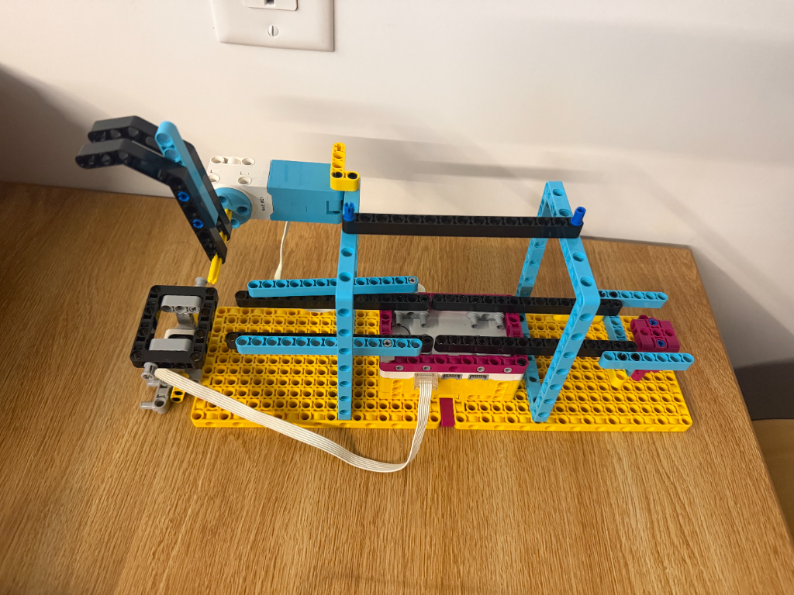

This project involved designing, prototyping, and programming an automated transfer system using the LEGO SPIKE Prime kit. The mechanism detects a ping-pong ball at a starting position (Point A) and propels it along a constrained track to a destination platform (Point B), using sensor feedback and motor control.
The system uses an asynchronous, event-driven MicroPython loop with hub libraries for motor positioning and sensor polling.
from hub import port
import runloop
import motor
import color_sensor
# Reflection above this value means a ball is present.
REFLECTION_THRESHOLD = 10
# Set the encoder baseline and movement amounts.
BASELINE_ANGLE = 190
CLOCKWISE_OFFSET = 50
KICK_DEGREES = -260
POSITION_SPEED = 100
KICK_SPEED = 410
# Check whether the sensor detects a ball.
def ball_detected():
return color_sensor.reflection(port.F) > REFLECTION_THRESHOLD
async def main():
# Move the kicker to its baseline position at startup.
await motor.run_to_absolute_position(
port.E, BASELINE_ANGLE, POSITION_SPEED
)
print("System armed. Waiting for ball at Point A...")
# Keep checking for a ball.
while True:
if ball_detected():
print("Ball detected! Kicking...")
# Wind up the kicker.
await motor.run_for_degrees(
port.E, CLOCKWISE_OFFSET, POSITION_SPEED
)
# Kick.
await motor.run_for_degrees(
port.E, KICK_DEGREES, KICK_SPEED
)
# Let the ball travel.
await runloop.sleep_ms(200)
# Return to the same encoder baseline, choosing the clockwise route.
await motor.run_to_absolute_position(
port.E,
BASELINE_ANGLE,
POSITION_SPEED,
direction=motor.CLOCKWISE
)
# Let the sensor settle before checking again.
await runloop.sleep_ms(1000)
print("Ready for next ball.")
# Pause briefly between sensor checks.
await runloop.sleep_ms(50)
runloop.run(main())